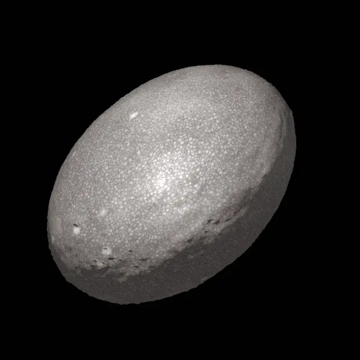

Planet Kerdil Elipsoid Sabuk Kuiper
Haumea adalah salah satu planet kerdil paling unik di Sabuk Kuiper. Akibat rotasinya yang sangat cepat—hanya membutuhkan waktu sekitar 3,9 jam untuk satu putaran penuh—gaya sentrifugal mengubah bentuk Haumea menjadi elipsoid triaksial menyerupai bola rugby. Permukaan Haumea hampir seluruhnya diselimuti oleh lapisan es air kristalin yang sangat reflektif dengan bercak merah kaya senyawa organik. Pada tahun 2017, para astronom menemukan bahwa Haumea memiliki sistem cincin tipis selebar 70 km, menjadikannya objek trans-Neptunus (*TNO*) pertama yang terkonfirmasi memiliki cincin.